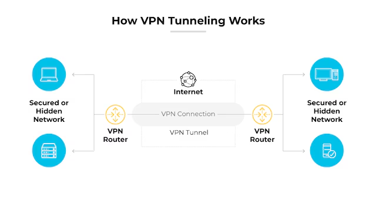
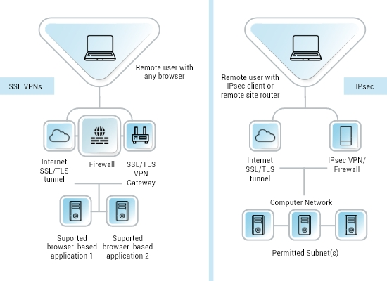
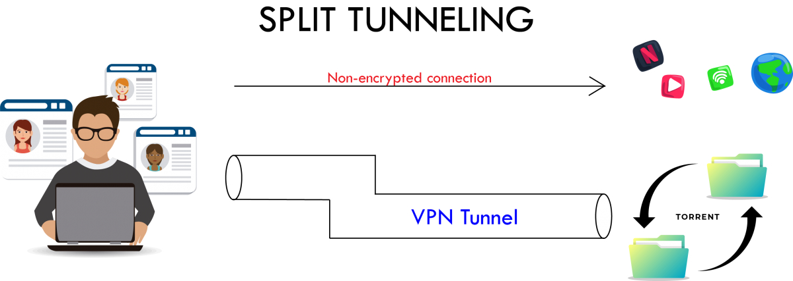

🔐 VPN-Grundlagen
i
Stell dir einen VPN-Tunnel wie eine private, blickdichte Röhre vor,
die mitten durch eine belebte öffentliche Strasse (das Internet)
gebaut wird - alles was durch die Röhre fährt, ist von aussen
weder sichtbar noch veränderbar.
i
Site-to-Site vs. Client-to-Site, IPSec vs. SSL-VPN, und warum Split-Tunneling ein Kompromiss zwischen Bequemlichkeit und Sicherheit ist.
📺 Vertiefung: Was ist ein VPN und wie funktioniert es? (PrivacyTutor)
Das Tunnel-Prinzip
Ein VPN verschlüsselt Daten an einem Ende, schickt sie durch ein unsicheres Netz (meist das Internet) und entschlüsselt sie am anderen Ende wieder. Für alles, was durch den Tunnel läuft, sieht es so aus, als wären beide Enden direkt lokal verbunden.

Animation: Tunnelaufbau + Datenkapselung
i
Wie ein Brief in einem blickdichten Kuvert, der zusätzlich noch
in ein zweites, äusseres Kuvert gesteckt wird: die Post (das
Internet) sieht nur die äussere Adresse (das VPN-Gateway) -
erst der Empfänger des äusseren Kuverts öffnet es und leitet
den inneren, unberührten Brief an sein eigentliches Ziel weiter.
i
Am Beispiel eines Client-to-Site-VPN (Homeoffice-Mitarbeiter greift per IPSec auf einen internen Fileserver zu):
- 1. IKE Phase 1 →Client baut einen sicheren Verhandlungskanal zum Gateway auf (Authentifizierung + Diffie-Hellman).
- 2. ← IKE Phase 1Gateway antwortet - der Verhandlungskanal (IKE SA) steht.
- 3. IKE Phase 2Über den sicheren Kanal werden die eigentlichen Datenverschlüsselungs-Schlüssel ausgehandelt (IPsec SA).
- 4. Tunnel stehtBeide Sicherheitsassoziationen sind aktiv - ab jetzt kann verschlüsselter Datenverkehr fliessen.
- 5. Datenpaket →Client verschlüsselt das Original-Paket komplett und kapselt es in ein neues äusseres Paket, adressiert ans Gateway.
- 6. → entkapseltGateway entschlüsselt/entkapselt und leitet das ursprüngliche Paket ans eigentliche interne Ziel weiter.
Bereit - klicke "Abspielen" oder gehe Schritt für Schritt durch.
Entscheidend ist Schritt 5: von aussen (im Internet) ist nur die äussere Adressierung Client ↔ Gateway sichtbar - die eigentliche interne Zieladresse steckt komplett verschlüsselt im inneren Paket und wird erst nach der Entkapselung am Gateway sichtbar.
Site-to-Site vs. Client-to-Site
i
Site-to-Site = zwei Gebäude bekommen eine feste private Standleitung.
Client-to-Site = eine einzelne Person bekommt bei Bedarf einen
temporären Zugang, egal von wo sie gerade kommt.
i
| Site-to-Site | Client-to-Site (Remote Access) | |
|---|---|---|
| Verbindet | zwei ganze Netzwerke/Standorte | ein einzelnes Gerät mit einem Netzwerk |
| Aufbau | Firewall/Router ↔ Firewall/Router | VPN-Client-Software ↔ VPN-Gateway |
| Dauer | dauerhaft aktiv | bei Bedarf, sitzungsbasiert |
| Typisches Beispiel | Hauptsitz ↔ Zweigstelle | Homeoffice-Mitarbeiter ↔ Firmennetz |
IPSec vs. SSL-VPN
| IPSec | SSL-VPN (TLS-VPN) | |
|---|---|---|
| OSI-Schicht | 3 (Vermittlung) - verschlüsselt ganze IP-Pakete | höher (nutzt TLS wie HTTPS) |
| Client | meist dedizierter Client/OS-Integration nötig | oft schon per Browser nutzbar |
| Firewall-Durchlässigkeit | eigene Ports (z.B. UDP 500/4500) - wird oft blockiert | meist Port 443 (HTTPS) - fast immer offen |
| Typischer Einsatz | Site-to-Site | Client-to-Site / Remote Access |
IPSec handelt Schlüssel in zwei Phasen aus (IKE Phase 1: sicherer Verhandlungskanal; Phase 2: eigentliche Datenverschlüsselungs-Schlüssel) - dadurch wird nie unverschlüsselt über die Schlüssel selbst gesprochen.

Split-Tunneling vs. Full-Tunneling
i
Full Tunnel: die Firma sieht (und kontrolliert) deinen gesamten
Internetverkehr, auch privates Surfen. Split Tunnel: die Firma
sieht nur, was wirklich für sie bestimmt ist - dafür trägt dein
Gerät selbst mehr Verantwortung für den Rest.
i
